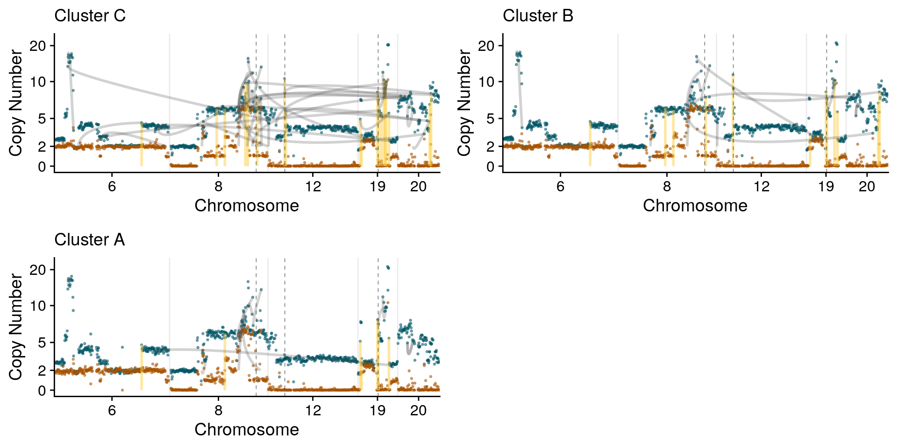
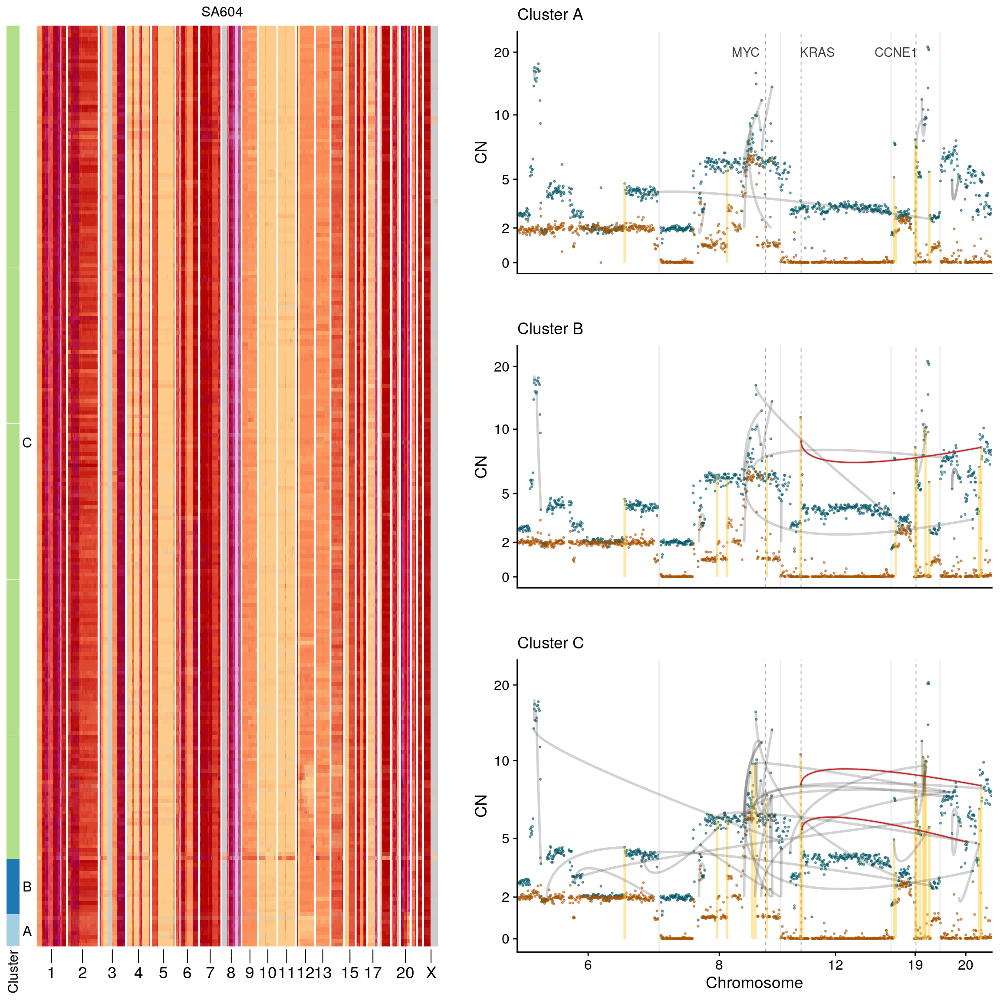
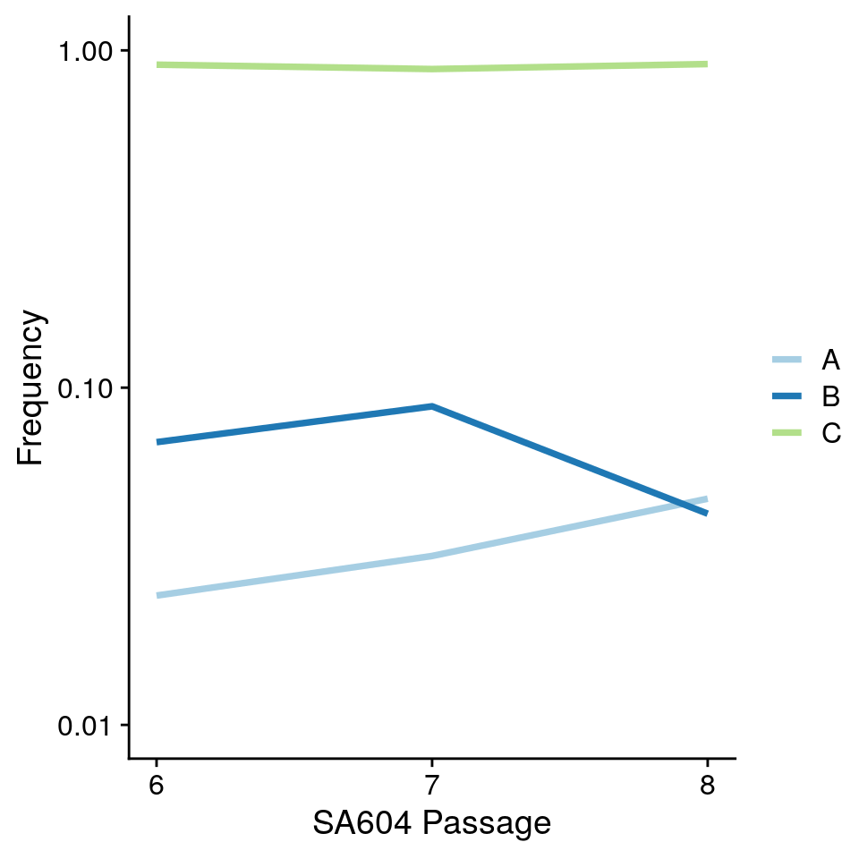

Section 8 Figure 6
8.1 Load data + packages
library(tidyverse)
library(devtools)
library(data.table)
library(cowplot)
library(yaml)
library(glue)
library(here)
library(yaml)
here::i_am("06-figure6.Rmd")
config <- read_yaml(here("metadata", "config.yaml"))
load_all(config$schnapps)
theme_set(theme_cowplot())
hscn <- fread(config$hscn)
hscn <- hscn[!is.na(sample)]
ploidy <- fread(config$ploidy)
hscn <- hscn[ploidy, on = "cell_id"]
hscn <- hscn[!is.na(cell_id)]
sampletags <- data.frame(sample = unique(hscn$sample)) %>% left_join(., stack(config$datagroups) %>%
rename(sample = values, datagroup = ind) %>% filter(datagroup %in% c("htert",
"tnbc", "hgsc", "her2_brca"))) %>% na.omit()
sampletags$sig_label <- unlist(lapply(sampletags$sample, function(x) config$datasets[[x]]$label))
metrics <- fread(config$metrics) %>% select(cell_id, coverage_breadth, state_mode,
sample) %>% arrange(desc(coverage_breadth))
bps <- fread(config$breakpoints)library(ComplexHeatmap)
library(grid)
rearrangement_plots <- function(hscn, mysample, chroms, bps, cl = NULL, w = 40, h = 13/3,
show_legend = FALSE, genes = NULL, minPts = 30, homolog = FALSE, annotateregions = NULL) {
if (is.null(cl)) {
cl <- umap_clustering(hscn[sample == mysample & chr %in% chroms], umapmetric = "euclidean",
field = "copy", minPts = minPts, min_dist = 0.1, seed = 123)
}
chromshm <- unique(hscn$chr)
chromshm <- chromshm[!chromshm %in% c("14", "16", "18", "19", "21", "22")]
hm <- plotHeatmap(hscn[sample == mysample], clusters = cl$clustering, tree = cl$tree,
reorderclusters = T, plottree = F, show_legend = show_legend, show_library_label = F,
chrlabels = chromshm)
hmchr <- grid::grid.grabExpr(ComplexHeatmap::draw(hm, column_title = mysample,
column_title_gp = gpar(fontsize = 12), heatmap_legend_side = "bottom", annotation_legend_side = "bottom",
show_heatmap_legend = show_legend), width = w, height = h)
hscn_clone <- hscn[sample == mysample] %>% left_join(cl$clustering) %>% group_by(chr,
start, end, clone_id) %>% summarise(state = schnapps:::Mode(state), state_min = schnapps:::Mode(state_min),
BAF = median(BAF), state_phase = schnapps:::Mode(state_phase), state_AS_phased = schnapps:::Mode(state_phase),
state_BAF = schnapps:::Mode(state_BAF), copy = median(copy)) %>% ungroup() %>%
dplyr::rename(cell_id = clone_id) %>% mutate(cell_id = paste0("Cluster ",
cell_id)) %>% dplyr::mutate(Bcopy = BAF * copy, Acopy = (1 - BAF) * copy)
hscn_clone <- consensuscopynumber(hscn[sample == mysample], cl$clustering) %>%
mutate(cell_id = paste0("Cluster ", cell_id))
bpsum <- bps %>% filter(cell_id %in% cl$clustering$cell_id) %>% left_join(cl$clustering) %>%
group_by(sample, chromosome_1, position_1, chromosome_2, position_2, type,
rearrangement_type, clone_id) %>% summarise(read_count = sum(read_count)) %>%
filter(read_count > 1 | rearrangement_type == "foldback") %>% ungroup() %>%
mutate(cell_id = paste0("Cluster ", clone_id))
glisthom <- list()
glist <- list()
for (mycl in unique(hscn_clone$cell_id)) {
cndat <- hscn_clone %>% filter(cell_id == mycl) #%>% rephasebins(.) %>% .$newhscn
glisthom[[mycl]] <- plotCNprofileBAF(cndat, legend.position = "none", annotateregions = annotateregions,
genes = genes, homolog = TRUE, pointsize = 0.5, alphaval = 0.5, svalpha = 0.25,
SV = bpsum %>% filter(cell_id == mycl), chrfilt = chroms, maxCN = 24,
y_axis_trans = "squashy") + ggtitle(mycl) + theme(plot.title = element_text(face = "plain",
size = 14))
glist[[mycl]] <- plotCNprofile(cndat, legend.position = "none", annotateregions = annotateregions,
genes = genes, pointsize = 0.5, alphaval = 0.5, svalpha = 0.25, SV = bpsum %>%
filter(cell_id == mycl), chrfilt = chroms, maxCN = 24, y_axis_trans = "squashy") +
ggtitle(mycl) + theme(plot.title = element_text(face = "plain", size = 14))
}
return(list(glist = glist, hm = hmchr, cl = cl, glisthom = glisthom))
}8.2 SA1049
chroms <- c("6", "7", "8", "9", "12", "17", "19")
gene_idx_SA1049 <- get_gene_idx(c("FGFR1", "KRAS"), chr = chroms)
clsa1049 <- umap_clustering(hscn[sample == "SA1049" & chr %in% chroms], umapmetric = "euclidean",
field = "copy", minPts = 30, min_dist = 0.1, seed = 123)
cndat <- hscn[sample == "SA1049" & cell_id %in% clsa1049$clustering$cell_id]
phasing <- rephasebins(cndat, clusterfirst = TRUE, cl = clsa1049$clustering %>% filter(clone_id !=
"0"))
cndat <- phasing$newhscn
sa1049 <- rearrangement_plots(cndat %>% as.data.table(), "SA1049", bps = bps, chroms = chroms,
annotateregions = gene_idx_SA1049, cl = clsa1049)
print(plot_grid(plotlist = sa1049$glisthom, ncol = 3))
cnplot2 <- plot_grid(sa1049$glisthom$`Cluster C` + theme(axis.title.x = element_blank(),
axis.text.x = element_blank(), axis.ticks.x = element_blank()) + geom_text(data = gene_idx_SA1049,
ggplot2::aes(x = idx - 72, y = 20, label = ensembl_gene_symbol), col = "black",
alpha = 0.75) + ylab("CN"), NULL, sa1049$glisthom$`Cluster F` + theme(axis.title.x = element_blank(),
axis.text.x = element_blank(), axis.ticks.x = element_blank()) + ggforce::geom_bezier(ggplot2::aes(x = idx,
y = copy, group = id), col = "firebrick3", data = sa1049$glisthom$`Cluster F`$layers[[5]]$data %>%
dplyr::filter(chromosome_1 == "12" & chromosome_2 == "8")) + ggforce::geom_bezier(ggplot2::aes(x = idx,
y = copy, group = id), col = "firebrick3", data = sa1049$glisthom$`Cluster F`$layers[[5]]$data %>%
dplyr::filter(chromosome_1 == "8" & chromosome_2 == "12")) + ylab("CN"), NULL,
sa1049$glisthom$`Cluster E` + ggforce::geom_bezier(ggplot2::aes(x = idx, y = copy,
group = id), col = "firebrick3", data = sa1049$glisthom$`Cluster E`$layers[[5]]$data %>%
dplyr::filter(chromosome_1 == "12" & chromosome_2 == "6")) + ggforce::geom_bezier(ggplot2::aes(x = idx,
y = copy, group = id), col = "firebrick3", data = sa1049$glisthom$`Cluster E`$layers[[5]]$data %>%
dplyr::filter(chromosome_1 == "12" & chromosome_2 == "8")) + ylab("CN"),
ncol = 1, rel_heights = c(1, 0.1, 1, 0.1, 1.3))
sa1049plot <- plot_grid(sa1049$hm, NULL, cnplot2, ncol = 3, rel_widths = c(1, 0.05,
1.2))
sa1049plot8.3 SA604
mysample <- "SA604"
mychr <- "12"
chroms <- c("6", "8", "12", "19", "20")
gene_idx_SA604 <- get_gene_idx(c(c("KRAS", "MYC", "CCNE1")), chr = chroms) %>% mutate(idx = ifelse(ensembl_gene_symbol ==
"KRAS", idx + 40, idx - 48))
clSA604 <- umap_clustering(hscn[sample == mysample & chr %in% c("12", "20")], minPts = 30,
min_dist = 0.1, seed = 123)
cndat <- hscn[cell_id %in% clSA604$clustering$cell_id]
sa604 <- rearrangement_plots(cndat %>% as.data.table(), mysample, bps = bps, chroms = chroms,
annotateregions = get_gene_idx(c("KRAS", "MYC", "CCNE1"), chr = chroms), cl = clSA604)
print(plot_grid(plotlist = sa604$glisthom, ncol = 2))cnplot2 <- plot_grid(sa604$glisthom$`Cluster A` + theme(axis.title.x = element_blank(),
axis.text.x = element_blank(), axis.ticks.x = element_blank()) + geom_text(data = gene_idx_SA604,
ggplot2::aes(x = idx, y = 20, label = ensembl_gene_symbol), col = "black", alpha = 0.75) +
ylab("CN"), NULL, sa604$glisthom$`Cluster B` + theme(axis.title.x = element_blank(),
axis.text.x = element_blank(), axis.ticks.x = element_blank()) + ggforce::geom_bezier(ggplot2::aes(x = idx,
y = copy, group = id), col = "firebrick3", data = sa604$glisthom$`Cluster B`$layers[[5]]$data %>%
dplyr::filter(chromosome_1 == "12" & chromosome_2 == "20")) + ylab("CN"), NULL,
sa604$glisthom$`Cluster C` + ggforce::geom_bezier(ggplot2::aes(x = idx, y = copy,
group = id), col = "firebrick3", data = sa604$glisthom$`Cluster C`$layers[[5]]$data %>%
dplyr::filter(chromosome_1 == "12" & chromosome_2 == "20")) + ylab("CN"),
ncol = 1, rel_heights = c(1, 0.1, 1, 0.1, 1.3))
sa604plot <- plot_grid(sa604$hm, NULL, cnplot2, ncol = 3, rel_widths = c(1, 0.05,
1.2))
sa604plot
8.4 SA604 time series
pal <- colorRampPalette(RColorBrewer::brewer.pal(12, "Paired"))(13)
(sa604passage <- sa604$cl$clustering %>%
mutate(passage = str_extract(cell_id, "X[0-9+]")) %>%
group_by(passage, clone_id) %>%
summarize(n = n()) %>%
mutate(f = n / sum(n)) %>%
ungroup() %>%
complete(passage, nesting(clone_id), fill = list(f = 0, n = 0)) %>%
mutate(passageidx = as.numeric(str_remove(passage, "X"))) %>%
ggplot(aes(x = passageidx, y = f, col = clone_id)) +
scale_color_brewer(palette = "Paired") +
#scale_color_manual(values = pal) +
geom_line(size = 1.3) +
theme_cowplot(font_size = 14) +
xlab("SA604 Passage") +
ylab("Frequency") +
scale_y_log10(breaks = c(0.01, 0.1, 1.0), limits = c(0.01, 1.0)) +
scale_x_continuous(breaks = c(6,7, 8)) +
theme(legend.title = element_blank()))
gene_df <- rbindlist(list(gene_copynumber(hscn[sample == "SA604"], "KRAS") %>% left_join(sa604$cl$clustering),
gene_copynumber(hscn[sample == "SA1049"], "KRAS") %>% left_join(sa1049$cl$clustering)))
(geneplot <- gene_df %>%
filter(copy < 20) %>%
mutate(id = paste0(ensembl_gene_symbol, " (", sample,clone_id, ")")) %>%
mutate(id = paste0(sample, " (", clone_id, ")")) %>%
ggplot(aes(x = id, y = copy, fill = sample)) +
geom_violin(scale = "width", alpha = 0.5, position = position_dodge(width = 1)) +
geom_point(alpha = 0.5, size = 0.3, position = position_jitterdodge(jitter.width = 0.1, jitter.height = 0.0, dodge.width = 1)) +
#coord_flip() +
theme_cowplot(font_size = 14) +
scale_fill_brewer(palette = "Dark2") +
theme(legend.title = element_blank(), legend.position = "none") +
scale_x_discrete(guide = guide_axis(angle = 45)) +
facet_wrap(~sample, scales = "free_x") +
panel_border() +
xlab("") +
ylim(c(0, 20)) +
ylab("KRAS Copy Number"))
8.5 Main figure
cnlegend <- get_legend(plotCNprofile(hscn) + theme_cowplot(font_size = 11, rel_small = 1) +
guides(col = guide_legend("CN", ncol = 4, override.aes = list(alpha = 1, size = 2.5,
shape = 15))))
homlegend <- get_legend(plotCNprofileBAF(hscn, homolog = T) + theme_cowplot(font_size = 11,
rel_small = 1) + guides(col = guide_legend("Allele", nrow = 3, override.aes = list(alpha = 1,
size = 2.5, shape = 15))))
l3 <- get_legend(data.frame(x = 1:2, y = 1:2, yx = c("Foldback", "Rearrangement")) %>%
ggplot(aes(x = x, y = y, col = yx)) + theme_cowplot() + geom_line() + scale_color_manual(values = c(SV_colors[["Foldback"]],
"grey30"), name = ""))
mylegends <- plot_grid(NULL, cnlegend, homlegend, l3, NULL, ncol = 5, rel_widths = c(1.5,
1, 1, 1, 1.5))bottom <- plot_grid(NULL, geneplot, sa604passage, NULL, ncol = 4, rel_widths = c(0.2,
1.3, 1, 0.2), labels = c("", "c", "d"))
gall <- plot_grid(plot_grid(sa1049plot, NULL, sa604plot, ncol = 1, labels = c("a",
"", "b"), rel_heights = c(1.2, 0.07, 1.2)), mylegends, bottom, ncol = 1, rel_heights = c(1,
0.1, 0.35))
gall